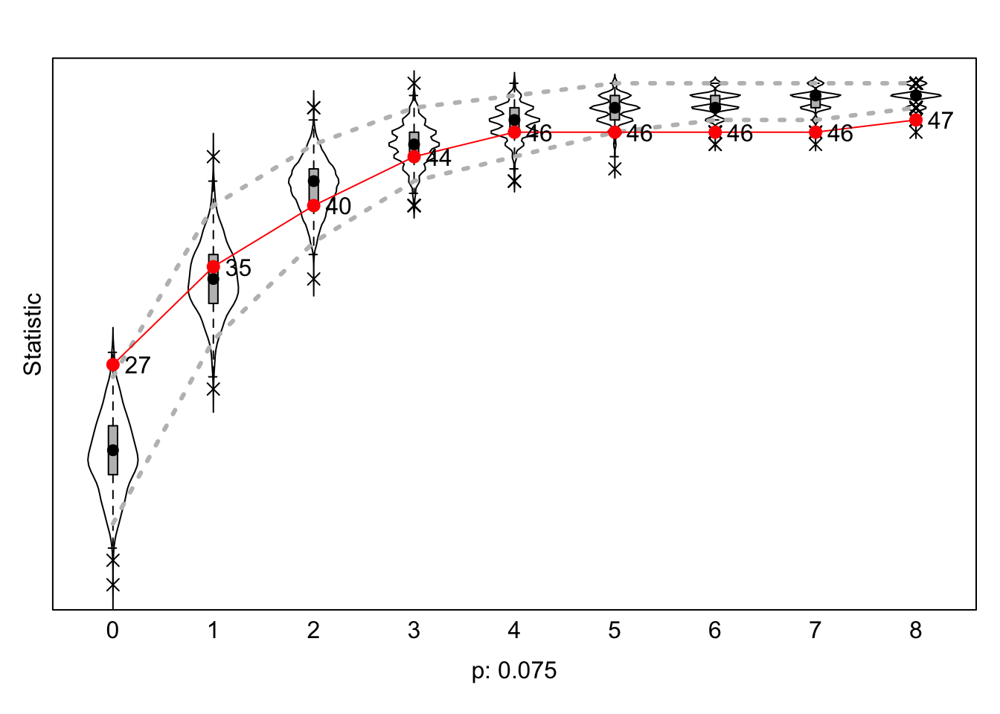
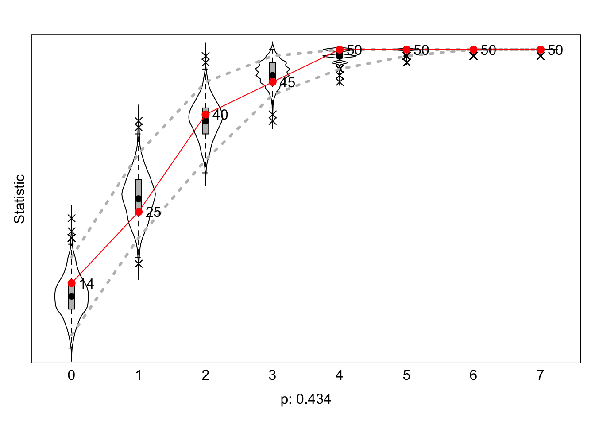
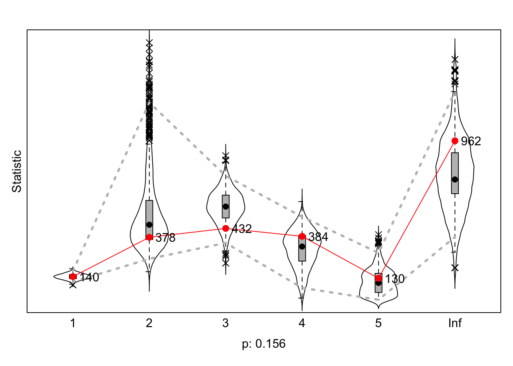

Test
Start with clean workspace
rm(list = ls())
fpackage.check <- function(packages) {
lapply(packages, FUN = function(x) {
if (!require(x, character.only = TRUE)) {
install.packages(x, dependencies = TRUE)
library(x, character.only = TRUE)
}
})
}
fsave <- function(x, file = NULL, location = "./data/processed/") {
ifelse(!dir.exists("data"), dir.create("data"), FALSE)
ifelse(!dir.exists("data/processed"), dir.create("data/processed"), FALSE)
if (is.null(file))
file = deparse(substitute(x))
datename <- substr(gsub("[:-]", "", Sys.time()), 1, 8)
totalname <- paste(location, datename, file, ".rda", sep = "")
save(x, file = totalname) #need to fix if file is reloaded as input name, not as x.
}
fload <- function(filename) {
load(filename)
get(ls()[ls() != "filename"])
}
fshowdf <- function(x, ...) {
knitr::kable(x, digits = 2, "html", ...) %>%
kableExtra::kable_styling(bootstrap_options = c("striped", "hover")) %>%
kableExtra::scroll_box(width = "100%", height = "300px")
}
# this is the most important one. We created it in the previous script
f_pubnets <- function(df_scholars = df, list_publications = publications, discip = "sociology", affiliation = "RU",
waves = list(wave1 = c(2018, 2019, 2020), wave2 = c(2021, 2022, 2023))) {
publications <- list_publications %>%
bind_rows() %>%
distinct(title, .keep_all = TRUE)
df_scholars %>%
filter(affil1 == affiliation | affil2 == affiliation) %>%
filter(discipline == discip) -> df_sel
networklist <- list()
for (wave in 1:length(waves)) {
networklist[[wave]] <- matrix(0, nrow = nrow(df_sel), ncol = nrow(df_sel))
}
publicationlist <- list()
for (wave in 1:length(waves)) {
publicationlist[[wave]] <- publications %>%
filter(gs_id %in% df_sel$gs_id) %>%
filter(year %in% waves[[wave]]) %>%
select(author) %>%
lapply(str_split, pattern = ",")
}
publicationlist2 <- list()
for (wave in 1:length(waves)) {
publicationlist2[[wave]] <- publicationlist[[wave]]$author %>%
# lowercase
lapply(tolower) %>%
# Removing diacritics
lapply(stri_trans_general, id = "latin-ascii") %>%
# only last name
lapply(word, start = -1, sep = " ") %>%
# only last last name
lapply(word, start = -1, sep = "-")
}
for (wave in 1:length(waves)) {
# let us remove all publications with only one author
remove <- which(sapply(publicationlist2[[wave]], FUN = function(x) length(x) == 1) == TRUE)
publicationlist2[[wave]] <- publicationlist2[[wave]][-remove]
}
for (wave in 1:length(waves)) {
pubs <- publicationlist2[[wave]]
for (ego in 1:nrow(df_sel)) {
# which ego?
lastname_ego <- df_sel$lastname[ego]
# for all publications
for (pub in 1:length(pubs)) {
# only continue if ego is author of pub
if (lastname_ego %in% pubs[[pub]]) {
aut_pot <- which.max(pubs[[pub]] %in% lastname_ego)
# only continue if ego is first author of pub
if (aut_pot == 1) {
# check all alters/co-authors
for (alter in 1:nrow(df_sel)) {
# which alter
lastname_alter <- df_sel$lastname[alter]
if (lastname_alter %in% pubs[[pub]]) {
networklist[[wave]][ego, alter] <- networklist[[wave]][ego, alter] + 1
}
}
}
}
}
}
}
return(list(df = df_sel, network = networklist))
}
packages = c("RSiena", "tidyverse", "stringdist", "stringi")
fpackage.check(packages)
#> [[1]]
#> NULL
#>
#> [[2]]
#> NULL
#>
#> [[3]]
#> NULL
#>
#> [[4]]
#> NULL
scholars <- fload("./data/processed/scholars_20240924.rda")
publications <- fload("./data/processed/works_20241001.rda")
fcolnet <- function(data = scholars, university = "RU", discipline = "sociology", waves = list(c(2015,
2018), c(2019, 2023)), type = c("first")) {
# step 1
demographics <- do.call(rbind.data.frame, data$demographics)
demographics <- demographics %>%
mutate(Universiteit1.22 = replace(Universiteit1.22, is.na(Universiteit1.22), ""), Universiteit2.22 = replace(Universiteit2.22,
is.na(Universiteit2.22), ""), Universiteit1.24 = replace(Universiteit1.24, is.na(Universiteit1.24),
""), Universiteit2.24 = replace(Universiteit2.24, is.na(Universiteit2.24), ""), discipline.22 = replace(discipline.22,
is.na(discipline.22), ""), discipline.24 = replace(discipline.24, is.na(discipline.24), ""))
sample <- which((demographics$Universiteit1.22 %in% university | demographics$Universiteit2.22 %in%
university | demographics$Universiteit1.24 %in% university | demographics$Universiteit2.24 %in%
university) & (demographics$discipline.22 %in% discipline | demographics$discipline.24 %in% discipline))
demographics_soc <- demographics[sample, ]
scholars_sel <- lapply(scholars, "[", sample)
# step 2
ids <- demographics_soc$au_id
nwaves <- length(waves)
nets <- array(0, dim = c(nwaves, length(ids), length(ids)), dimnames = list(wave = 1:nwaves, ids,
ids))
dimnames(nets)
# step 3
df_works <- tibble(works_id = unlist(lapply(scholars_sel$work, function(l) l$id)), works_author = unlist(lapply(scholars_sel$work,
function(l) l$author), recursive = FALSE), works_year = unlist(lapply(scholars_sel$work, function(l) l$publication_year),
recursive = FALSE))
df_works <- df_works[!duplicated(df_works), ]
# step 4
if (type == "first") {
for (j in 1:nwaves) {
df_works_w <- df_works[df_works$works_year >= waves[[j]][1] & df_works$works_year <= waves[[j]][2],
]
for (i in 1:nrow(df_works_w)) {
ego <- df_works_w$works_author[i][[1]]$au_id[1]
alters <- df_works_w$works_author[i][[1]]$au_id[-1]
if (sum(ids %in% ego) > 0 & sum(ids %in% alters) > 0) {
nets[j, which(ids %in% ego), which(ids %in% alters)] <- 1
}
}
}
}
if (type == "last") {
for (j in 1:nwaves) {
df_works_w <- df_works[df_works$works_year >= waves[[j]][1] & df_works$works_year <= waves[[j]][2],
]
for (i in 1:nrow(df_works_w)) {
ego <- rev(df_works_w$works_author[i][[1]]$au_id)[1]
alters <- rev(df_works_w$works_author[i][[1]]$au_id)[-1]
if (sum(ids %in% ego) > 0 & sum(ids %in% alters) > 0) {
nets[j, which(ids %in% ego), which(ids %in% alters)] <- 1
}
}
}
}
if (type == "all") {
for (j in 1:nwaves) {
df_works_w <- df_works[df_works$works_year >= waves[[j]][1] & df_works$works_year <= waves[[j]][2],
]
for (i in 1:nrow(df_works_w)) {
egos <- df_works_w$works_author[i][[1]]$au_id
if (sum(ids %in% egos) > 0) {
nets[j, which(ids %in% egos), which(ids %in% egos)] <- 1
}
}
}
}
output <- list()
output$data <- scholars_sel
output$nets <- nets
return(output)
}
# save the output of your function
test <- fcolnet(data = scholars, university = "RU", discipline = "sociology", waves = list(c(2015, 2018),
c(2019, 2023)), type = c("first"))
df_soc <- test$data
df_network <- test$nets
length(df_network)
#> [1] 5000
dim(test$nets)
#> [1] 2 50 50
wave1 <- test$nets[1, , ]
wave2 <- test$nets[2, , ]
diag(wave1) <- 0
diag(wave2) <- 0
# put the nets in an array
net_soc_array <- array(data = c(wave1, wave2), dim = c(dim(wave1), 2))
dim(net_soc_array)
#> [1] 50 50 2
net <- sienaDependent(net_soc_array)
Gender <- sample(1:2, size = 50, replace = TRUE)
gender <- coCovar(Gender)
mydata <- sienaDataCreate(net, gender)
myeff <- getEffects(mydata)
myeff
#> effectName include fix test initialValue parm
#> 1 basic rate parameter net TRUE FALSE FALSE 3.14565 0
#> 2 outdegree (density) TRUE FALSE FALSE -1.53846 0
#> 3 reciprocity TRUE FALSE FALSE 0.00000 0
effectsDocumentation(myeff)
#> Effects documentation written to file myeff.html .
ifelse(!dir.exists("results"), dir.create("results"), TRUE)
#> [1] TRUE
print01Report(mydata, modelname = "./results/soc_init")
myeff <- includeEffects(myeff, isolateNet, inPop, outAct) #we know that quite a lot of staff has not published with someone else
#> effectName shortName include fix test initialValue parm
#> 1 indegree - popularity inPop TRUE FALSE FALSE 0 0
#> 2 outdegree - activity outAct TRUE FALSE FALSE 0 0
#> 3 network-isolate isolateNet TRUE FALSE FALSE 0 0
myeff <- includeEffects(myeff, sameX, egoX, altX, interaction1 = "gender")
#> effectName shortName include fix test initialValue parm
#> 1 gender alter altX TRUE FALSE FALSE 0 0
#> 2 gender ego egoX TRUE FALSE FALSE 0 0
#> 3 same gender sameX TRUE FALSE FALSE 0 0
myAlgorithm <- sienaAlgorithmCreate(projname = "soc_init")
#> If you use this algorithm object, siena07 will create/use an output file soc_init.txt .
ansM1 <- siena07(myAlgorithm, data = mydata, effects = myeff, returnDeps = TRUE)
# if necessary estimate again! ansM1 <- siena07(myAlgorithm, data = mydata, effects = myeff,
# prevAns = ansM1, returnDeps=TRUE)
ansM1
#> Estimates, standard errors and convergence t-ratios
#>
#> Estimate Standard Convergence
#> Error t-ratio
#>
#> Rate parameters:
#> 0 Rate parameter 3.6610 ( 0.7308 )
#>
#> Other parameters:
#> 1. eval outdegree (density) -2.1034 ( 0.6435 ) 0.0020
#> 2. eval reciprocity 0.9973 ( 0.4042 ) -0.0410
#> 3. eval indegree - popularity 0.2397 ( 0.0431 ) 0.0861
#> 4. eval outdegree - activity -0.0391 ( 0.1158 ) -0.0221
#> 5. eval network-isolate 2.4381 ( 1.3382 ) -0.0747
#> 6. eval gender alter 0.1917 ( 0.2405 ) -0.0510
#> 7. eval gender ego 0.1708 ( 0.2887 ) -0.0665
#> 8. eval same gender -0.1410 ( 0.2204 ) -0.0070
#>
#> Overall maximum convergence ratio: 0.1540
#>
#>
#> Total of 2297 iteration steps.
# see here: ?'sienaGOF-auxiliary'
# The geodesic distribution is not available from within RSiena, and therefore is copied from the
# help page of sienaGOF-auxiliary:
# GeodesicDistribution calculates the distribution of non-directed geodesic distances; see
# ?sna::geodist The default for \code{levls} reflects the usual phenomenon that geodesic distances
# larger than 5 do not differ appreciably with respect to interpretation. Note that the levels of
# the result are named; these names are used in the \code{plot} method.
GeodesicDistribution <- function(i, data, sims, period, groupName, varName, levls = c(1:5, Inf), cumulative = TRUE,
...) {
x <- networkExtraction(i, data, sims, period, groupName, varName)
require(sna)
a <- sna::geodist(symmetrize(x))$gdist
if (cumulative) {
gdi <- sapply(levls, function(i) {
sum(a <= i)
})
} else {
gdi <- sapply(levls, function(i) {
sum(a == i)
})
}
names(gdi) <- as.character(levls)
gdi
}
# The following function is taken from the help page for sienaTest
testall <- function(ans) {
for (i in which(ans$test)) {
sct <- score.Test(ans, i)
cat(ans$requestedEffects$effectName[i], "\n")
print(sct)
}
invisible(score.Test(ans))
}
gofi0 <- sienaGOF(ansM1, IndegreeDistribution, verbose = FALSE, join = TRUE, varName = "net")
gofo0 <- sienaGOF(ansM1, OutdegreeDistribution, verbose = FALSE, join = TRUE, levls = c(0:10, 15, 20),
varName = "net")
gof0.gd <- sienaGOF(ansM1, GeodesicDistribution, cumulative = FALSE, verbose = FALSE, join = TRUE, varName = "net")
# to check the indegree distribution of the outcome network ourselves:
table(colSums(wave2))
#>
#> 0 1 2 3 4 8 9 10 11
#> 27 8 5 4 2 1 1 1 1
plot(gofi0, main = "")

plot(gofo0, main = "")
#> Note: some statistics are not plotted because their variance is 0.
#> This holds for the statistics: 8 9 10 15 20.

plot(gof0.gd, main = "")

LS0tCnRpdGxlOiAiV2VlayA1OiBSU2llbmEgRXhhbXBsZSAoaW4tY2xhc3MpIgpvdXRwdXQ6IGh0bWxfZG9jdW1lbnQKZGF0ZTogIjIwMjQtMTAtMDIiCmJpYmxpb2dyYXBoeTogcmVmZXJlbmNlcy5iaWIKYXV0aG9yOiAiTHVjYW4gQm92ZW5zIgotLS0KICAKYGBge3IsIGdsb2JhbHNldHRpbmdzLCBlY2hvPUZBTFNFLCB3YXJuaW5nPUZBTFNFLCByZXN1bHRzPSdoaWRlJ30KbGlicmFyeShrbml0cikKCmtuaXRyOjpvcHRzX2NodW5rJHNldChlY2hvID0gVFJVRSkKb3B0c19jaHVuayRzZXQodGlkeS5vcHRzPWxpc3Qod2lkdGguY3V0b2ZmPTEwMCksdGlkeT1UUlVFLCB3YXJuaW5nID0gRkFMU0UsIG1lc3NhZ2UgPSBGQUxTRSxjb21tZW50ID0gIiM+IiwgY2FjaGU9VFJVRSwgY2xhc3Muc291cmNlPWMoInRlc3QiKSwgY2xhc3Mub3V0cHV0PWMoInRlc3QyIikpCm9wdGlvbnMod2lkdGggPSAxMDApCnJnbDo6c2V0dXBLbml0cigpCgpjb2xvcml6ZSA8LSBmdW5jdGlvbih4LCBjb2xvcikge3NwcmludGYoIjxzcGFuIHN0eWxlPSdjb2xvcjogJXM7Jz4lczwvc3Bhbj4iLCBjb2xvciwgeCkgfQpgYGAKCmBgYHtyIGtsaXBweSwgZWNobz1GQUxTRSwgaW5jbHVkZT1UUlVFfQprbGlwcHk6OmtsaXBweShwb3NpdGlvbiA9IGMoJ3RvcCcsICdyaWdodCcpKQoja2xpcHB5OjprbGlwcHkoY29sb3IgPSAnZGFya3JlZCcpCiNrbGlwcHk6OmtsaXBweSh0b29sdGlwX21lc3NhZ2UgPSAnQ2xpY2sgdG8gY29weScsIHRvb2x0aXBfc3VjY2VzcyA9ICdEb25lJykKYGBgCgpgYGB7ciBzZXR1cCwgaW5jbHVkZT1GQUxTRX0Ka25pdHI6Om9wdHNfY2h1bmskc2V0KGVjaG8gPSBUUlVFKQpgYGAKLS0tLQogIAojIFdlZWsgNSAtICBSU2llbmEgRXhhbXBsZQogIAotLS0tCiAgCiMgVGVzdAoKU3RhcnQgd2l0aCBjbGVhbiB3b3Jrc3BhY2UgCgpgYGB7cn0Kcm0obGlzdD1scygpKQpgYGAKCmBgYHtyfQpmcGFja2FnZS5jaGVjayA8LSBmdW5jdGlvbihwYWNrYWdlcykgewogICAgbGFwcGx5KHBhY2thZ2VzLCBGVU4gPSBmdW5jdGlvbih4KSB7CiAgICAgICAgaWYgKCFyZXF1aXJlKHgsIGNoYXJhY3Rlci5vbmx5ID0gVFJVRSkpIHsKICAgICAgICAgICAgaW5zdGFsbC5wYWNrYWdlcyh4LCBkZXBlbmRlbmNpZXMgPSBUUlVFKQogICAgICAgICAgICBsaWJyYXJ5KHgsIGNoYXJhY3Rlci5vbmx5ID0gVFJVRSkKICAgICAgICB9CiAgICB9KQp9Cgpmc2F2ZSA8LSBmdW5jdGlvbih4LCBmaWxlID0gTlVMTCwgbG9jYXRpb24gPSAiLi9kYXRhL3Byb2Nlc3NlZC8iKSB7CiAgICBpZmVsc2UoIWRpci5leGlzdHMoImRhdGEiKSwgZGlyLmNyZWF0ZSgiZGF0YSIpLCBGQUxTRSkKICAgIGlmZWxzZSghZGlyLmV4aXN0cygiZGF0YS9wcm9jZXNzZWQiKSwgZGlyLmNyZWF0ZSgiZGF0YS9wcm9jZXNzZWQiKSwgRkFMU0UpCiAgICBpZiAoaXMubnVsbChmaWxlKSkKICAgICAgICBmaWxlID0gZGVwYXJzZShzdWJzdGl0dXRlKHgpKQogICAgZGF0ZW5hbWUgPC0gc3Vic3RyKGdzdWIoIls6LV0iLCAiIiwgU3lzLnRpbWUoKSksIDEsIDgpCiAgICB0b3RhbG5hbWUgPC0gcGFzdGUobG9jYXRpb24sIGRhdGVuYW1lLCBmaWxlLCAiLnJkYSIsIHNlcCA9ICIiKQogICAgc2F2ZSh4LCBmaWxlID0gdG90YWxuYW1lKSAgI25lZWQgdG8gZml4IGlmIGZpbGUgaXMgcmVsb2FkZWQgYXMgaW5wdXQgbmFtZSwgbm90IGFzIHguIAp9CgpmbG9hZCA8LSBmdW5jdGlvbihmaWxlbmFtZSkgewogICAgbG9hZChmaWxlbmFtZSkKICAgIGdldChscygpW2xzKCkgIT0gImZpbGVuYW1lIl0pCn0KCmZzaG93ZGYgPC0gZnVuY3Rpb24oeCwgLi4uKSB7CiAgICBrbml0cjo6a2FibGUoeCwgZGlnaXRzID0gMiwgImh0bWwiLCAuLi4pICU+JQogICAgICAgIGthYmxlRXh0cmE6OmthYmxlX3N0eWxpbmcoYm9vdHN0cmFwX29wdGlvbnMgPSBjKCJzdHJpcGVkIiwgImhvdmVyIikpICU+JQogICAgICAgIGthYmxlRXh0cmE6OnNjcm9sbF9ib3god2lkdGggPSAiMTAwJSIsIGhlaWdodCA9ICIzMDBweCIpCn0KCgoKIyB0aGlzIGlzIHRoZSBtb3N0IGltcG9ydGFudCBvbmUuIFdlIGNyZWF0ZWQgaXQgaW4gdGhlIHByZXZpb3VzIHNjcmlwdAoKZl9wdWJuZXRzIDwtIGZ1bmN0aW9uKGRmX3NjaG9sYXJzID0gZGYsIGxpc3RfcHVibGljYXRpb25zID0gcHVibGljYXRpb25zLCBkaXNjaXAgPSAic29jaW9sb2d5IiwgYWZmaWxpYXRpb24gPSAiUlUiLAogICAgd2F2ZXMgPSBsaXN0KHdhdmUxID0gYygyMDE4LCAyMDE5LCAyMDIwKSwgd2F2ZTIgPSBjKDIwMjEsIDIwMjIsIDIwMjMpKSkgewoKICAgIHB1YmxpY2F0aW9ucyA8LSBsaXN0X3B1YmxpY2F0aW9ucyAlPiUKICAgICAgICBiaW5kX3Jvd3MoKSAlPiUKICAgICAgICBkaXN0aW5jdCh0aXRsZSwgLmtlZXBfYWxsID0gVFJVRSkKCiAgICBkZl9zY2hvbGFycyAlPiUKICAgICAgICBmaWx0ZXIoYWZmaWwxID09IGFmZmlsaWF0aW9uIHwgYWZmaWwyID09IGFmZmlsaWF0aW9uKSAlPiUKICAgICAgICBmaWx0ZXIoZGlzY2lwbGluZSA9PSBkaXNjaXApIC0+IGRmX3NlbAoKICAgIG5ldHdvcmtsaXN0IDwtIGxpc3QoKQogICAgZm9yICh3YXZlIGluIDE6bGVuZ3RoKHdhdmVzKSkgewogICAgICAgIG5ldHdvcmtsaXN0W1t3YXZlXV0gPC0gbWF0cml4KDAsIG5yb3cgPSBucm93KGRmX3NlbCksIG5jb2wgPSBucm93KGRmX3NlbCkpCiAgICB9CgogICAgcHVibGljYXRpb25saXN0IDwtIGxpc3QoKQogICAgZm9yICh3YXZlIGluIDE6bGVuZ3RoKHdhdmVzKSkgewogICAgICAgIHB1YmxpY2F0aW9ubGlzdFtbd2F2ZV1dIDwtIHB1YmxpY2F0aW9ucyAlPiUKICAgICAgICAgICAgZmlsdGVyKGdzX2lkICVpbiUgZGZfc2VsJGdzX2lkKSAlPiUKICAgICAgICAgICAgZmlsdGVyKHllYXIgJWluJSB3YXZlc1tbd2F2ZV1dKSAlPiUKICAgICAgICAgICAgc2VsZWN0KGF1dGhvcikgJT4lCiAgICAgICAgICAgIGxhcHBseShzdHJfc3BsaXQsIHBhdHRlcm4gPSAiLCIpCiAgICB9CgogICAgcHVibGljYXRpb25saXN0MiA8LSBsaXN0KCkKICAgIGZvciAod2F2ZSBpbiAxOmxlbmd0aCh3YXZlcykpIHsKICAgICAgICBwdWJsaWNhdGlvbmxpc3QyW1t3YXZlXV0gPC0gcHVibGljYXRpb25saXN0W1t3YXZlXV0kYXV0aG9yICU+JQogICAgICAgICAgICAjIGxvd2VyY2FzZQogICAgICAgIGxhcHBseSh0b2xvd2VyKSAlPiUKICAgICAgICAgICAgIyBSZW1vdmluZyBkaWFjcml0aWNzCiAgICAgICAgbGFwcGx5KHN0cmlfdHJhbnNfZ2VuZXJhbCwgaWQgPSAibGF0aW4tYXNjaWkiKSAlPiUKICAgICAgICAgICAgIyBvbmx5IGxhc3QgbmFtZQogICAgICAgIGxhcHBseSh3b3JkLCBzdGFydCA9IC0xLCBzZXAgPSAiICIpICU+JQogICAgICAgICAgICAjIG9ubHkgbGFzdCBsYXN0IG5hbWUKICAgICAgICBsYXBwbHkod29yZCwgc3RhcnQgPSAtMSwgc2VwID0gIi0iKQogICAgfQoKICAgIGZvciAod2F2ZSBpbiAxOmxlbmd0aCh3YXZlcykpIHsKICAgICAgICAjIGxldCB1cyByZW1vdmUgYWxsIHB1YmxpY2F0aW9ucyB3aXRoIG9ubHkgb25lIGF1dGhvcgogICAgICAgIHJlbW92ZSA8LSB3aGljaChzYXBwbHkocHVibGljYXRpb25saXN0Mltbd2F2ZV1dLCBGVU4gPSBmdW5jdGlvbih4KSBsZW5ndGgoeCkgPT0gMSkgPT0gVFJVRSkKICAgICAgICBwdWJsaWNhdGlvbmxpc3QyW1t3YXZlXV0gPC0gcHVibGljYXRpb25saXN0Mltbd2F2ZV1dWy1yZW1vdmVdCiAgICB9CgogICAgZm9yICh3YXZlIGluIDE6bGVuZ3RoKHdhdmVzKSkgewogICAgICAgIHB1YnMgPC0gcHVibGljYXRpb25saXN0Mltbd2F2ZV1dCiAgICAgICAgZm9yIChlZ28gaW4gMTpucm93KGRmX3NlbCkpIHsKICAgICAgICAgICAgIyB3aGljaCBlZ28/CiAgICAgICAgICAgIGxhc3RuYW1lX2VnbyA8LSBkZl9zZWwkbGFzdG5hbWVbZWdvXQogICAgICAgICAgICAjIGZvciBhbGwgcHVibGljYXRpb25zCiAgICAgICAgICAgIGZvciAocHViIGluIDE6bGVuZ3RoKHB1YnMpKSB7CiAgICAgICAgICAgICAgICAjIG9ubHkgY29udGludWUgaWYgZWdvIGlzIGF1dGhvciBvZiBwdWIKICAgICAgICAgICAgICAgIGlmIChsYXN0bmFtZV9lZ28gJWluJSBwdWJzW1twdWJdXSkgewogICAgICAgICAgICAgICAgICBhdXRfcG90IDwtIHdoaWNoLm1heChwdWJzW1twdWJdXSAlaW4lIGxhc3RuYW1lX2VnbykKICAgICAgICAgICAgICAgICAgIyBvbmx5IGNvbnRpbnVlIGlmIGVnbyBpcyBmaXJzdCBhdXRob3Igb2YgcHViCiAgICAgICAgICAgICAgICAgIGlmIChhdXRfcG90ID09IDEpIHsKICAgICAgICAgICAgICAgICAgICAjIGNoZWNrIGFsbCBhbHRlcnMvY28tYXV0aG9ycwogICAgICAgICAgICAgICAgICAgIGZvciAoYWx0ZXIgaW4gMTpucm93KGRmX3NlbCkpIHsKICAgICAgICAgICAgICAgICAgICAgICMgd2hpY2ggYWx0ZXIKICAgICAgICAgICAgICAgICAgICAgIGxhc3RuYW1lX2FsdGVyIDwtIGRmX3NlbCRsYXN0bmFtZVthbHRlcl0KICAgICAgICAgICAgICAgICAgICAgIGlmIChsYXN0bmFtZV9hbHRlciAlaW4lIHB1YnNbW3B1Yl1dKSB7CiAgICAgICAgICAgICAgICAgICAgICAgIG5ldHdvcmtsaXN0W1t3YXZlXV1bZWdvLCBhbHRlcl0gPC0gbmV0d29ya2xpc3RbW3dhdmVdXVtlZ28sIGFsdGVyXSArIDEKICAgICAgICAgICAgICAgICAgICAgIH0KICAgICAgICAgICAgICAgICAgICB9CiAgICAgICAgICAgICAgICAgIH0KICAgICAgICAgICAgICAgIH0KICAgICAgICAgICAgfQogICAgICAgIH0KICAgIH0KICAgIHJldHVybihsaXN0KGRmID0gZGZfc2VsLCBuZXR3b3JrID0gbmV0d29ya2xpc3QpKQp9CmBgYAoKYGBge3J9CnBhY2thZ2VzID0gYygiUlNpZW5hIiwgInRpZHl2ZXJzZSIsICJzdHJpbmdkaXN0IiwgInN0cmluZ2kiKQoKZnBhY2thZ2UuY2hlY2socGFja2FnZXMpCmBgYAoKCmBgYHtyfQpzY2hvbGFycyA8LSBmbG9hZCgiLi9kYXRhL3Byb2Nlc3NlZC9zY2hvbGFyc18yMDI0MDkyNC5yZGEiKQpwdWJsaWNhdGlvbnMgPC0gZmxvYWQoIi4vZGF0YS9wcm9jZXNzZWQvd29ya3NfMjAyNDEwMDEucmRhIikKYGBgCgpgYGB7cn0KZmNvbG5ldCA8LSBmdW5jdGlvbihkYXRhID0gc2Nob2xhcnMsIHVuaXZlcnNpdHkgPSAiUlUiLCBkaXNjaXBsaW5lID0gInNvY2lvbG9neSIsIHdhdmVzID0gbGlzdChjKDIwMTUsCiAgICAyMDE4KSwgYygyMDE5LCAyMDIzKSksIHR5cGUgPSBjKCJmaXJzdCIpKSB7CgogICAgIyBzdGVwIDEKICAgIGRlbW9ncmFwaGljcyA8LSBkby5jYWxsKHJiaW5kLmRhdGEuZnJhbWUsIGRhdGEkZGVtb2dyYXBoaWNzKQogICAgZGVtb2dyYXBoaWNzIDwtIGRlbW9ncmFwaGljcyAlPiUKICAgICAgICBtdXRhdGUoVW5pdmVyc2l0ZWl0MS4yMiA9IHJlcGxhY2UoVW5pdmVyc2l0ZWl0MS4yMiwgaXMubmEoVW5pdmVyc2l0ZWl0MS4yMiksICIiKSwgVW5pdmVyc2l0ZWl0Mi4yMiA9IHJlcGxhY2UoVW5pdmVyc2l0ZWl0Mi4yMiwKICAgICAgICAgICAgaXMubmEoVW5pdmVyc2l0ZWl0Mi4yMiksICIiKSwgVW5pdmVyc2l0ZWl0MS4yNCA9IHJlcGxhY2UoVW5pdmVyc2l0ZWl0MS4yNCwgaXMubmEoVW5pdmVyc2l0ZWl0MS4yNCksCiAgICAgICAgICAgICIiKSwgVW5pdmVyc2l0ZWl0Mi4yNCA9IHJlcGxhY2UoVW5pdmVyc2l0ZWl0Mi4yNCwgaXMubmEoVW5pdmVyc2l0ZWl0Mi4yNCksICIiKSwgZGlzY2lwbGluZS4yMiA9IHJlcGxhY2UoZGlzY2lwbGluZS4yMiwKICAgICAgICAgICAgaXMubmEoZGlzY2lwbGluZS4yMiksICIiKSwgZGlzY2lwbGluZS4yNCA9IHJlcGxhY2UoZGlzY2lwbGluZS4yNCwgaXMubmEoZGlzY2lwbGluZS4yNCksICIiKSkKCiAgICBzYW1wbGUgPC0gd2hpY2goKGRlbW9ncmFwaGljcyRVbml2ZXJzaXRlaXQxLjIyICVpbiUgdW5pdmVyc2l0eSB8IGRlbW9ncmFwaGljcyRVbml2ZXJzaXRlaXQyLjIyICVpbiUKICAgICAgICB1bml2ZXJzaXR5IHwgZGVtb2dyYXBoaWNzJFVuaXZlcnNpdGVpdDEuMjQgJWluJSB1bml2ZXJzaXR5IHwgZGVtb2dyYXBoaWNzJFVuaXZlcnNpdGVpdDIuMjQgJWluJQogICAgICAgIHVuaXZlcnNpdHkpICYgKGRlbW9ncmFwaGljcyRkaXNjaXBsaW5lLjIyICVpbiUgZGlzY2lwbGluZSB8IGRlbW9ncmFwaGljcyRkaXNjaXBsaW5lLjI0ICVpbiUgZGlzY2lwbGluZSkpCgogICAgZGVtb2dyYXBoaWNzX3NvYyA8LSBkZW1vZ3JhcGhpY3Nbc2FtcGxlLCBdCiAgICBzY2hvbGFyc19zZWwgPC0gbGFwcGx5KHNjaG9sYXJzLCAiWyIsIHNhbXBsZSkKCiAgICAjIHN0ZXAgMgogICAgaWRzIDwtIGRlbW9ncmFwaGljc19zb2MkYXVfaWQKICAgIG53YXZlcyA8LSBsZW5ndGgod2F2ZXMpCiAgICBuZXRzIDwtIGFycmF5KDAsIGRpbSA9IGMobndhdmVzLCBsZW5ndGgoaWRzKSwgbGVuZ3RoKGlkcykpLCBkaW1uYW1lcyA9IGxpc3Qod2F2ZSA9IDE6bndhdmVzLCBpZHMsCiAgICAgICAgaWRzKSkKICAgIGRpbW5hbWVzKG5ldHMpCgogICAgIyBzdGVwIDMKICAgIGRmX3dvcmtzIDwtIHRpYmJsZSh3b3Jrc19pZCA9IHVubGlzdChsYXBwbHkoc2Nob2xhcnNfc2VsJHdvcmssIGZ1bmN0aW9uKGwpIGwkaWQpKSwgd29ya3NfYXV0aG9yID0gdW5saXN0KGxhcHBseShzY2hvbGFyc19zZWwkd29yaywKICAgICAgICBmdW5jdGlvbihsKSBsJGF1dGhvciksIHJlY3Vyc2l2ZSA9IEZBTFNFKSwgd29ya3NfeWVhciA9IHVubGlzdChsYXBwbHkoc2Nob2xhcnNfc2VsJHdvcmssIGZ1bmN0aW9uKGwpIGwkcHVibGljYXRpb25feWVhciksCiAgICAgICAgcmVjdXJzaXZlID0gRkFMU0UpKQoKICAgIGRmX3dvcmtzIDwtIGRmX3dvcmtzWyFkdXBsaWNhdGVkKGRmX3dvcmtzKSwgXQoKICAgICMgc3RlcCA0CiAgICBpZiAodHlwZSA9PSAiZmlyc3QiKSB7CiAgICAgICAgZm9yIChqIGluIDE6bndhdmVzKSB7CiAgICAgICAgICAgIGRmX3dvcmtzX3cgPC0gZGZfd29ya3NbZGZfd29ya3Mkd29ya3NfeWVhciA+PSB3YXZlc1tbal1dWzFdICYgZGZfd29ya3Mkd29ya3NfeWVhciA8PSB3YXZlc1tbal1dWzJdLAogICAgICAgICAgICAgICAgXQogICAgICAgICAgICBmb3IgKGkgaW4gMTpucm93KGRmX3dvcmtzX3cpKSB7CiAgICAgICAgICAgICAgICBlZ28gPC0gZGZfd29ya3NfdyR3b3Jrc19hdXRob3JbaV1bWzFdXSRhdV9pZFsxXQogICAgICAgICAgICAgICAgYWx0ZXJzIDwtIGRmX3dvcmtzX3ckd29ya3NfYXV0aG9yW2ldW1sxXV0kYXVfaWRbLTFdCiAgICAgICAgICAgICAgICBpZiAoc3VtKGlkcyAlaW4lIGVnbykgPiAwICYgc3VtKGlkcyAlaW4lIGFsdGVycykgPiAwKSB7CiAgICAgICAgICAgICAgICAgIG5ldHNbaiwgd2hpY2goaWRzICVpbiUgZWdvKSwgd2hpY2goaWRzICVpbiUgYWx0ZXJzKV0gPC0gMQogICAgICAgICAgICAgICAgfQogICAgICAgICAgICB9CiAgICAgICAgfQogICAgfQoKICAgIGlmICh0eXBlID09ICJsYXN0IikgewogICAgICAgIGZvciAoaiBpbiAxOm53YXZlcykgewogICAgICAgICAgICBkZl93b3Jrc193IDwtIGRmX3dvcmtzW2RmX3dvcmtzJHdvcmtzX3llYXIgPj0gd2F2ZXNbW2pdXVsxXSAmIGRmX3dvcmtzJHdvcmtzX3llYXIgPD0gd2F2ZXNbW2pdXVsyXSwKICAgICAgICAgICAgICAgIF0KICAgICAgICAgICAgZm9yIChpIGluIDE6bnJvdyhkZl93b3Jrc193KSkgewogICAgICAgICAgICAgICAgZWdvIDwtIHJldihkZl93b3Jrc193JHdvcmtzX2F1dGhvcltpXVtbMV1dJGF1X2lkKVsxXQogICAgICAgICAgICAgICAgYWx0ZXJzIDwtIHJldihkZl93b3Jrc193JHdvcmtzX2F1dGhvcltpXVtbMV1dJGF1X2lkKVstMV0KICAgICAgICAgICAgICAgIGlmIChzdW0oaWRzICVpbiUgZWdvKSA+IDAgJiBzdW0oaWRzICVpbiUgYWx0ZXJzKSA+IDApIHsKICAgICAgICAgICAgICAgICAgbmV0c1tqLCB3aGljaChpZHMgJWluJSBlZ28pLCB3aGljaChpZHMgJWluJSBhbHRlcnMpXSA8LSAxCiAgICAgICAgICAgICAgICB9CiAgICAgICAgICAgIH0KICAgICAgICB9CiAgICB9CgogICAgaWYgKHR5cGUgPT0gImFsbCIpIHsKICAgICAgICBmb3IgKGogaW4gMTpud2F2ZXMpIHsKICAgICAgICAgICAgZGZfd29ya3NfdyA8LSBkZl93b3Jrc1tkZl93b3JrcyR3b3Jrc195ZWFyID49IHdhdmVzW1tqXV1bMV0gJiBkZl93b3JrcyR3b3Jrc195ZWFyIDw9IHdhdmVzW1tqXV1bMl0sCiAgICAgICAgICAgICAgICBdCiAgICAgICAgICAgIGZvciAoaSBpbiAxOm5yb3coZGZfd29ya3NfdykpIHsKICAgICAgICAgICAgICAgIGVnb3MgPC0gZGZfd29ya3NfdyR3b3Jrc19hdXRob3JbaV1bWzFdXSRhdV9pZAogICAgICAgICAgICAgICAgaWYgKHN1bShpZHMgJWluJSBlZ29zKSA+IDApIHsKICAgICAgICAgICAgICAgICAgbmV0c1tqLCB3aGljaChpZHMgJWluJSBlZ29zKSwgd2hpY2goaWRzICVpbiUgZWdvcyldIDwtIDEKICAgICAgICAgICAgICAgIH0KICAgICAgICAgICAgfQogICAgICAgIH0KICAgIH0KICAgIG91dHB1dCA8LSBsaXN0KCkKICAgIG91dHB1dCRkYXRhIDwtIHNjaG9sYXJzX3NlbAogICAgb3V0cHV0JG5ldHMgPC0gbmV0cwogICAgcmV0dXJuKG91dHB1dCkKfQpgYGAKCmBgYHtyfQojc2F2ZSB0aGUgb3V0cHV0IG9mIHlvdXIgZnVuY3Rpb24KdGVzdCA8LSBmY29sbmV0KGRhdGEgPSBzY2hvbGFycywgCiAgICAgICAgICAgICAgICB1bml2ZXJzaXR5ID0gIlJVIiwgCiAgICAgICAgICAgICAgICBkaXNjaXBsaW5lID0gInNvY2lvbG9neSIsIAogICAgICAgICAgICAgICAgd2F2ZXMgPSBsaXN0KGMoMjAxNSwgMjAxOCksIGMoMjAxOSwgMjAyMykpLCAKICAgICAgICAgICAgICAgIHR5cGUgPSBjKCJmaXJzdCIpKQpgYGAKCmBgYHtyfQpkZl9zb2MgPC0gdGVzdCRkYXRhCmRmX25ldHdvcmsgPC0gdGVzdCRuZXRzCgpsZW5ndGgoZGZfbmV0d29yaykKCmRpbSh0ZXN0JG5ldHMpCmBgYAoKYGBge3J9CndhdmUxIDwtIHRlc3QkbmV0c1sxLCxdCndhdmUyIDwtIHRlc3QkbmV0c1syLCxdCmRpYWcod2F2ZTEpIDwtIDAKZGlhZyh3YXZlMikgPC0gMAoKIyBwdXQgdGhlIG5ldHMgaW4gYW4gYXJyYXkKbmV0X3NvY19hcnJheSA8LSBhcnJheSAoZGF0YSA9IGMod2F2ZTEsIHdhdmUyKSwgZGltID0gYyhkaW0od2F2ZTEpLCAyKSkKZGltKG5ldF9zb2NfYXJyYXkpCgpuZXQgPC0gc2llbmFEZXBlbmRlbnQobmV0X3NvY19hcnJheSkKYGBgCgpgYGB7cn0KCkdlbmRlciA8LSBzYW1wbGUoMToyLCBzaXplID0gNTAsIHJlcGxhY2UgPSBUUlVFKQpnZW5kZXIgPC0gY29Db3ZhcihHZW5kZXIpCmBgYAoKCmBgYHtyfQpteWRhdGEgPC0gc2llbmFEYXRhQ3JlYXRlKG5ldCwgZ2VuZGVyKQpgYGAKCmBgYHtyfQpteWVmZiA8LSBnZXRFZmZlY3RzKG15ZGF0YSkKbXllZmYKZWZmZWN0c0RvY3VtZW50YXRpb24obXllZmYpCmBgYAoKYGBge3J9CmlmZWxzZSghZGlyLmV4aXN0cygicmVzdWx0cyIpLCBkaXIuY3JlYXRlKCJyZXN1bHRzIiksIFRSVUUpCmBgYAoKYGBge3J9CnByaW50MDFSZXBvcnQobXlkYXRhLCBtb2RlbG5hbWUgPSAiLi9yZXN1bHRzL3NvY19pbml0IikKYGBgCgohW10ocmVzdWx0cy9zb2NfaW5pdC50eHQpe3dpZHRoPTIwMDBweCwgaGVpZ2h0PTQwMHB4fQoKCmBgYHtyfQpteWVmZiA8LSBpbmNsdWRlRWZmZWN0cyhteWVmZiwgaXNvbGF0ZU5ldCwgaW5Qb3AsIG91dEFjdCkgICN3ZSBrbm93IHRoYXQgcXVpdGUgYSBsb3Qgb2Ygc3RhZmYgaGFzIG5vdCBwdWJsaXNoZWQgd2l0aCBzb21lb25lIGVsc2UKYGBgCgpgYGB7cn0KbXllZmYgPC0gaW5jbHVkZUVmZmVjdHMobXllZmYsIHNhbWVYLCBlZ29YLCBhbHRYLCBpbnRlcmFjdGlvbjEgPSAiZ2VuZGVyIikKYGBgCmBgYHtyfQpteUFsZ29yaXRobSA8LSBzaWVuYUFsZ29yaXRobUNyZWF0ZShwcm9qbmFtZSA9ICJzb2NfaW5pdCIpCmFuc00xIDwtIHNpZW5hMDcobXlBbGdvcml0aG0sIGRhdGEgPSBteWRhdGEsIGVmZmVjdHMgPSBteWVmZiwgcmV0dXJuRGVwcyA9IFRSVUUpCiMgaWYgbmVjZXNzYXJ5IGVzdGltYXRlIGFnYWluISAgYW5zTTEgPC0gc2llbmEwNyhteUFsZ29yaXRobSwgZGF0YSA9IG15ZGF0YSwgZWZmZWN0cyA9IG15ZWZmLAojIHByZXZBbnMgPSBhbnNNMSwgcmV0dXJuRGVwcz1UUlVFKQphbnNNMQpgYGAKCmBgYHtyfQojIHNlZSBoZXJlOiA/J3NpZW5hR09GLWF1eGlsaWFyeScKCiMgVGhlIGdlb2Rlc2ljIGRpc3RyaWJ1dGlvbiBpcyBub3QgYXZhaWxhYmxlIGZyb20gd2l0aGluIFJTaWVuYSwgYW5kIHRoZXJlZm9yZSBpcyBjb3BpZWQgZnJvbSB0aGUKIyBoZWxwIHBhZ2Ugb2Ygc2llbmFHT0YtYXV4aWxpYXJ5OgoKIyBHZW9kZXNpY0Rpc3RyaWJ1dGlvbiBjYWxjdWxhdGVzIHRoZSBkaXN0cmlidXRpb24gb2Ygbm9uLWRpcmVjdGVkIGdlb2Rlc2ljIGRpc3RhbmNlczsgc2VlCiMgP3NuYTo6Z2VvZGlzdCBUaGUgZGVmYXVsdCBmb3IgXGNvZGV7bGV2bHN9IHJlZmxlY3RzIHRoZSB1c3VhbCBwaGVub21lbm9uIHRoYXQgZ2VvZGVzaWMgZGlzdGFuY2VzCiMgbGFyZ2VyIHRoYW4gNSBkbyBub3QgZGlmZmVyIGFwcHJlY2lhYmx5IHdpdGggcmVzcGVjdCB0byBpbnRlcnByZXRhdGlvbi4gIE5vdGUgdGhhdCB0aGUgbGV2ZWxzIG9mCiMgdGhlIHJlc3VsdCBhcmUgbmFtZWQ7IHRoZXNlIG5hbWVzIGFyZSB1c2VkIGluIHRoZSBcY29kZXtwbG90fSBtZXRob2QuCkdlb2Rlc2ljRGlzdHJpYnV0aW9uIDwtIGZ1bmN0aW9uKGksIGRhdGEsIHNpbXMsIHBlcmlvZCwgZ3JvdXBOYW1lLCB2YXJOYW1lLCBsZXZscyA9IGMoMTo1LCBJbmYpLCBjdW11bGF0aXZlID0gVFJVRSwKICAgIC4uLikgewogICAgeCA8LSBuZXR3b3JrRXh0cmFjdGlvbihpLCBkYXRhLCBzaW1zLCBwZXJpb2QsIGdyb3VwTmFtZSwgdmFyTmFtZSkKICAgIHJlcXVpcmUoc25hKQogICAgYSA8LSBzbmE6Omdlb2Rpc3Qoc3ltbWV0cml6ZSh4KSkkZ2Rpc3QKICAgIGlmIChjdW11bGF0aXZlKSB7CiAgICAgICAgZ2RpIDwtIHNhcHBseShsZXZscywgZnVuY3Rpb24oaSkgewogICAgICAgICAgICBzdW0oYSA8PSBpKQogICAgICAgIH0pCiAgICB9IGVsc2UgewogICAgICAgIGdkaSA8LSBzYXBwbHkobGV2bHMsIGZ1bmN0aW9uKGkpIHsKICAgICAgICAgICAgc3VtKGEgPT0gaSkKICAgICAgICB9KQogICAgfQogICAgbmFtZXMoZ2RpKSA8LSBhcy5jaGFyYWN0ZXIobGV2bHMpCiAgICBnZGkKfQoKIyBUaGUgZm9sbG93aW5nIGZ1bmN0aW9uIGlzIHRha2VuIGZyb20gdGhlIGhlbHAgcGFnZSBmb3Igc2llbmFUZXN0Cgp0ZXN0YWxsIDwtIGZ1bmN0aW9uKGFucykgewogICAgZm9yIChpIGluIHdoaWNoKGFucyR0ZXN0KSkgewogICAgICAgIHNjdCA8LSBzY29yZS5UZXN0KGFucywgaSkKICAgICAgICBjYXQoYW5zJHJlcXVlc3RlZEVmZmVjdHMkZWZmZWN0TmFtZVtpXSwgIlxuIikKICAgICAgICBwcmludChzY3QpCiAgICB9CiAgICBpbnZpc2libGUoc2NvcmUuVGVzdChhbnMpKQp9CmBgYAoKYGBge3J9CmdvZmkwIDwtIHNpZW5hR09GKGFuc00xLCBJbmRlZ3JlZURpc3RyaWJ1dGlvbiwgdmVyYm9zZSA9IEZBTFNFLCBqb2luID0gVFJVRSwgdmFyTmFtZSA9ICJuZXQiKQpnb2ZvMCA8LSBzaWVuYUdPRihhbnNNMSwgT3V0ZGVncmVlRGlzdHJpYnV0aW9uLCB2ZXJib3NlID0gRkFMU0UsIGpvaW4gPSBUUlVFLCBsZXZscyA9IGMoMDoxMCwgMTUsIDIwKSwKICAgIHZhck5hbWUgPSAibmV0IikKZ29mMC5nZCA8LSBzaWVuYUdPRihhbnNNMSwgR2VvZGVzaWNEaXN0cmlidXRpb24sIGN1bXVsYXRpdmUgPSBGQUxTRSwgdmVyYm9zZSA9IEZBTFNFLCBqb2luID0gVFJVRSwgdmFyTmFtZSA9ICJuZXQiKQpgYGAKCmBgYHtyfQojIHRvIGNoZWNrIHRoZSBpbmRlZ3JlZSBkaXN0cmlidXRpb24gb2YgdGhlIG91dGNvbWUgbmV0d29yayBvdXJzZWx2ZXM6CnRhYmxlKGNvbFN1bXMod2F2ZTIpKQpgYGAKCmBgYHtyfQpwbG90KGdvZmkwLCBtYWluID0gIiIpCmBgYApgYGB7cn0KcGxvdChnb2ZvMCwgbWFpbiA9ICIiKQpgYGAKYGBge3J9CnBsb3QoZ29mMC5nZCwgbWFpbiA9ICIiKQpgYGAKCg==